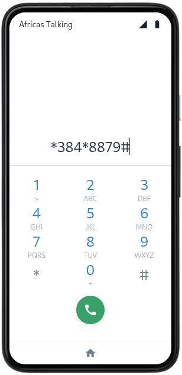
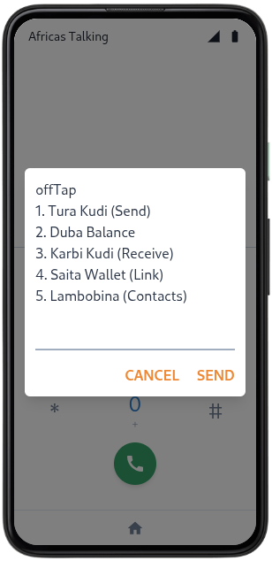
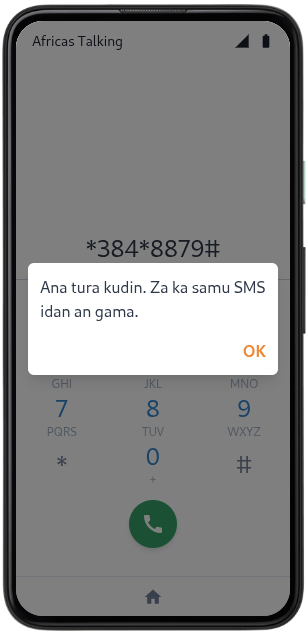
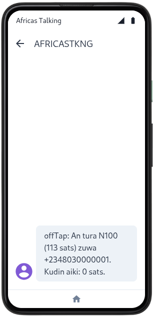
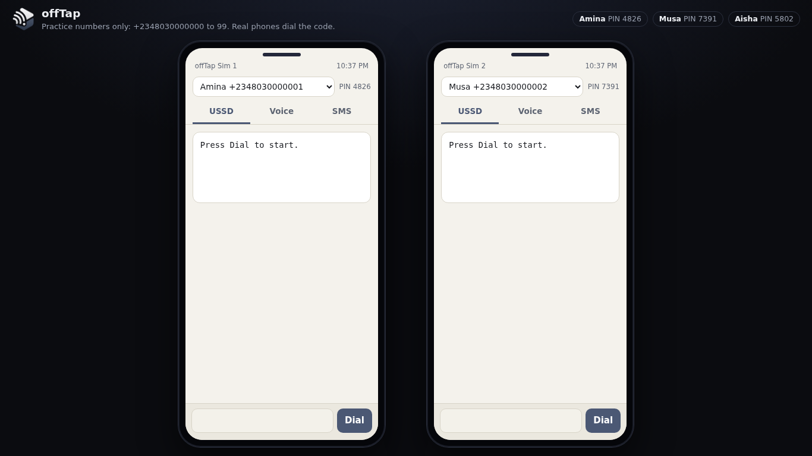

Lightning payments in Hausa, over USSD and voice.
For any phone, with no data and no app.
Kamal Aliyu · github.com/Alkamal01/offTap · offtap.onrender.com/sim
A trader dials a short code and has a Lightning wallet in under a minute. Everything after that works by keypad or by speaking.
The menu, prompts and messages are in Hausa. Every wallet is driven through Nostr Wallet Connect (NIP-47).




Screens from the Africa's Talking simulator, talking to the deployed server. Test sats.
"Tura dubu biyar zuwa Musa"
Send five thousand to Musa
Every easy wallet has a Lightning address made from its phone number.
| Easy wallet | Own wallet | |
|---|---|---|
| Set up | Entirely over USSD | Link an NWC connection on a web page |
| Who holds the funds | The offTap operator's node, one sub-wallet per user. Custodial. | The merchant's own wallet |
| What offTap can do | Spend from the sub-wallet | Pay and read balance, up to the budget the merchant set |
| For | Anyone with any phone, small amounts | Merchants who want control |
Same menu, same phone number, same PIN flow. A trader can start with the easy wallet and switch to their own from the menu.
What it does not solve
The full threat model is in the repository, with the file that implements each control.
Working
Not yet
Two phones in the browser, each with USSD, voice and SMS. Send from one and watch the other receive.
Or run it locally:
| Trader | Phone | PIN |
|---|---|---|
| Amina | +2348030000001 | 4826 |
| Musa | +2348030000002 | 7391 |

The demo server sleeps when idle. The first load can take a minute.
Codegithub.com/Alkamal01/offTap
Demoofftap.onrender.com/sim